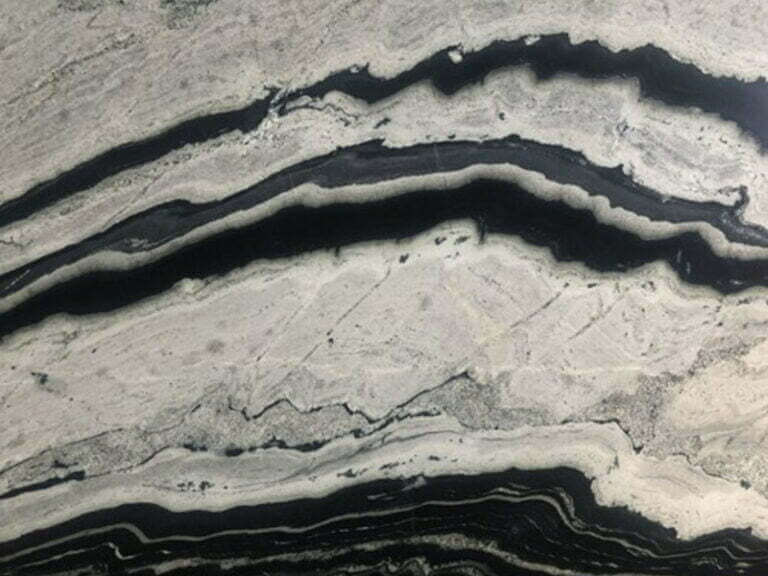
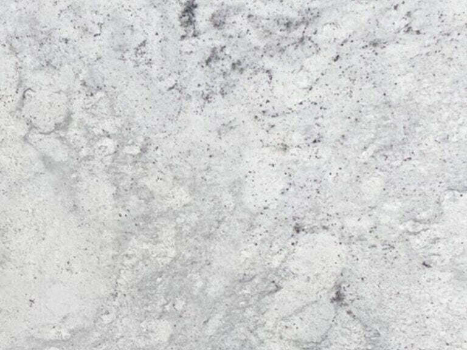
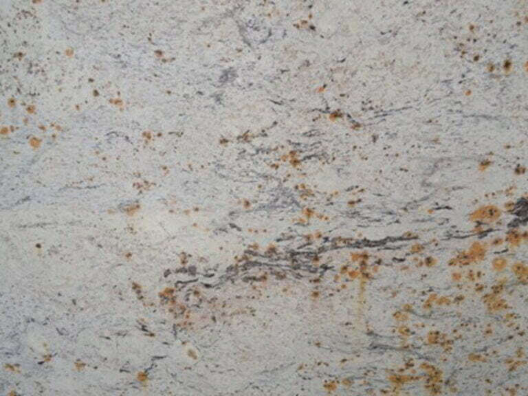
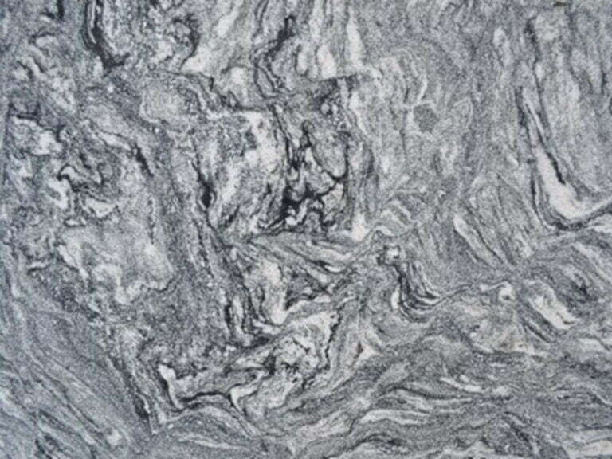
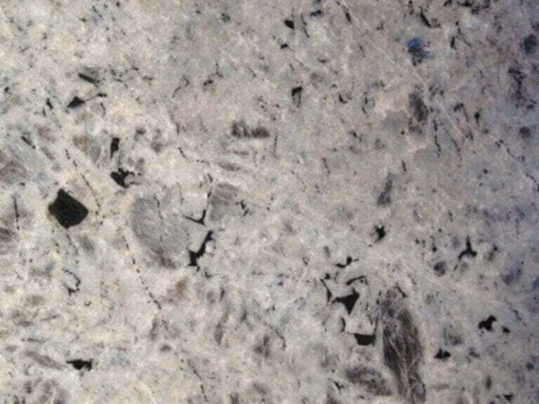
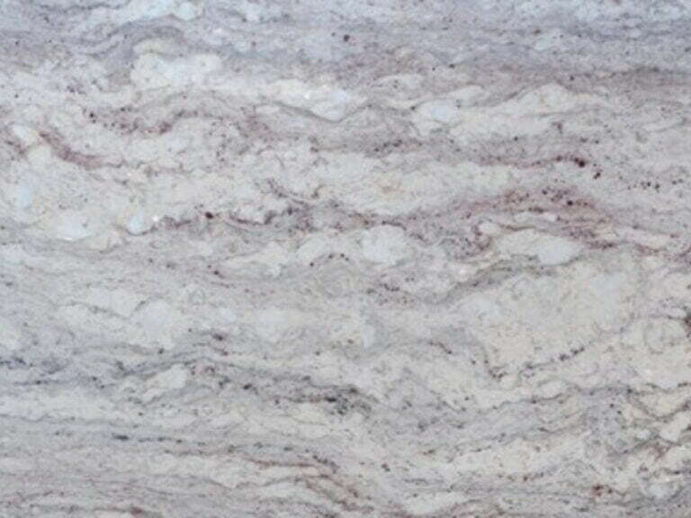
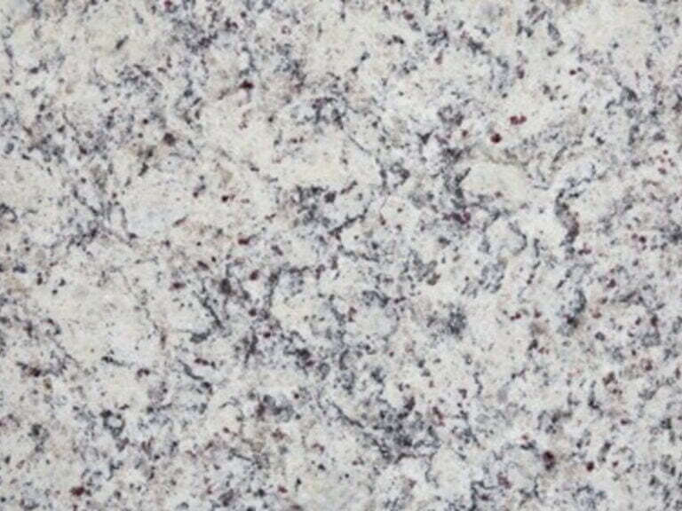
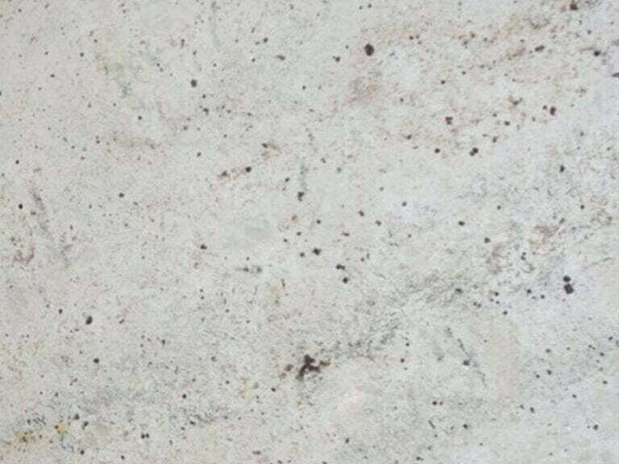

White Granite
Worktops
From near-pure white to marble-like flowing veins and dramatic banded patterns — the finest white granites in Essex, all available to view at our Harlow showroom.
Light, Elegant & Enduringly Popular
White granite worktops are one of the most sought-after choices in British kitchens — and it's easy to understand why. They open a space, reflect light, and pair beautifully with almost any cabinetry colour or kitchen style. Unlike engineered white surfaces, natural white granite brings warmth, depth, and organic character that no manufactured material can replicate.
Our range spans eight distinct white granites — from the clean simplicity of Alpine White and White Galaxy to the dramatic movement of River White and the extraordinary banding of White Agata. Each is available to view as a full slab at our Harlow showroom.
Explore the Range
8 White Granites In Stock
Every stone below is available as a full-size slab at our Harlow showroom. All prices include templating, fabrication, and installation.

Alpine White
Near-pure white with soft grey cloud-like mottling and delicate dark speckles. Clean, cool, and quietly sophisticated — ideal for contemporary kitchens.

Buckingham White
Warm cream-white with scattered rust, amber, and gold mineral spots alongside fine grey veining. A stone with real warmth and traditional character.

Cosmic White
Dark grey with dramatic bold swirling white veining in turbulent, storm-like patterns. The most dramatic stone in our white range — a real statement piece.

Labradorite White
White-grey with scattered dark mineral inclusions and a subtle blue iridescent shimmer. An understated stone with a hidden depth that reveals itself in direct light.

River White
White and cream with flowing horizontal bands of grey and soft mauve-pink veining. Elegant movement that brings to mind marble — at granite's durability.

Topazio White
White with a busy scatter of dark grey, black, and burgundy-red speckles throughout. A lively, traditional granite with plenty of natural character.
White Agata
Cream-white with bold sweeping black bands running across the surface like geological strata. Extraordinary and architectural — unlike any conventional granite.

White Galaxy
Pale, near-pure white with very subtle light grey veining and a fine scatter of tiny dark speckles. The cleanest, most minimal stone in our white range.
River White Granite
River White is one of the most popular stones we stock, and it's easy to see why. The flowing horizontal bands of grey and soft mauve-pink give it an elegance that closely resembles marble — but with granite's superior durability, heat resistance, and easier maintenance.
It works beautifully in both traditional and contemporary kitchens, pairing naturally with white cabinetry, pale grey units, and warm wood tones alike. If you want the look of marble without the vulnerability, River White is the answer.
White Agata Granite
White Agata is a stone that stops people in their tracks. Cream-white stone crossed by sweeping black bands that run across the slab like layers of geological history — bold, dramatic, and completely unlike anything else in our range.
It suits design-led kitchens where the worktop is meant to be the centrepiece. Against plain white or dark cabinetry, the black and white contrast becomes the defining feature of the entire room. It's the kind of stone you see once and don't forget.
Cosmic White Granite
Despite its name, Cosmic White is not a pale stone — it's a dark grey granite with bold, turbulent white veining that sweeps and swirls across the surface with extraordinary energy. The result is one of the most visually dynamic stones in our entire collection.
It works brilliantly as an island or feature worktop against lighter perimeter surfaces. In a kitchen with dark cabinetry, the white veining provides dramatic contrast. A genuinely memorable stone that photographs exceptionally well.
The Advantages of White Granite Worktops
Brightens Any Kitchen
White granite reflects light beautifully, making kitchens feel larger, airier, and more welcoming. Even in north-facing or lower-ground kitchens, a white granite worktop makes a tangible difference to the quality of light in the space.
Natural Warmth
Unlike engineered white surfaces, natural white granite has organic warmth and variation — subtle mineral movement, soft veining, and natural character that makes each slab unique and far more interesting than a flat, manufactured finish.
Pairs with Everything
White granite is one of the most versatile worktop choices available. It works with dark cabinetry, light cabinetry, wood tones, painted units, and everything in between. It's the safest design choice that never looks wrong.
Granite Durability
All the practical advantages of granite apply here — exceptional hardness, heat resistance, and longevity. White granite looks delicate but performs like the toughest natural material available for kitchen surfaces.
Marble Look, Granite Performance
Stones like River White and White Agata offer the flowing veined appearance of marble — without marble's porosity, softness, and susceptibility to etching. You get the aesthetic without the vulnerability.
Adds Property Value
White granite worktops are consistently associated with premium kitchen design. They photograph well, appeal broadly to buyers, and are one of the highest-return kitchen investments you can make.
Caring for White Granite Worktops
Seal Thoroughly — White Shows More
White granite requires the same sealing routine as any granite, but it's especially important with lighter stones — any staining is more visible on a pale surface. We seal every worktop on installation. Reseal every 12–18 months with a quality impregnating sealer to keep the surface fully protected.
Wipe Spills Immediately
Red wine, coffee, tomato sauce, and turmeric are the main culprits on white surfaces. On a well-sealed stone, these wipe away easily — but don't leave them to sit. A quick wipe with a damp cloth is all that's needed for fresh spills.
Use pH-Neutral Cleaners
Avoid bleach, vinegar, and citrus-based sprays — these can degrade the sealant over time and may dull the finish on lighter stones. A pH-neutral kitchen cleaner or plain warm soapy water is all you need for daily cleaning.
Always Use a Chopping Board
Granite is hard enough to blunt knives quickly, and cutting marks — while unlikely to penetrate deeply — can show more readily on white and pale surfaces. A chopping board is good practice for both the stone and your knives.
How Much Does a White Granite Worktop Cost?
Cost depends on the stone, the size of the kitchen, edge profile, and cutouts required. The guide below gives typical starting prices — get in touch for a detailed, itemised quote specific to your project.
Fully fitted, standard kitchen. Uniform and speckled stones are straightforward to fabricate and price.
Veined and character stones require careful slab selection. Priced per project based on the specific slab.
Rare, highly individual stones with dramatic character. Individually assessed and priced per slab.
All prices include templating, fabrication, and installation. The price we quote is the price you pay.
Visit Our Showroom or Request a Free Quote
All 8 white granites are available as full slabs at our Harlow showroom — no appointment needed. Or get in touch and we'll come to you for a free measure and quote.